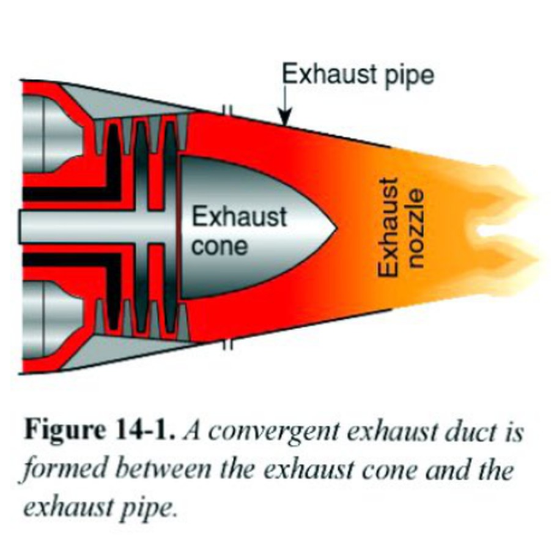
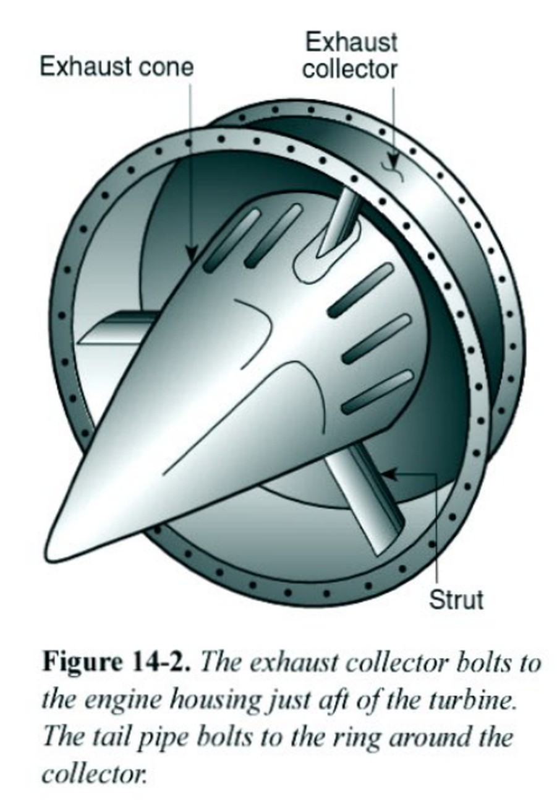
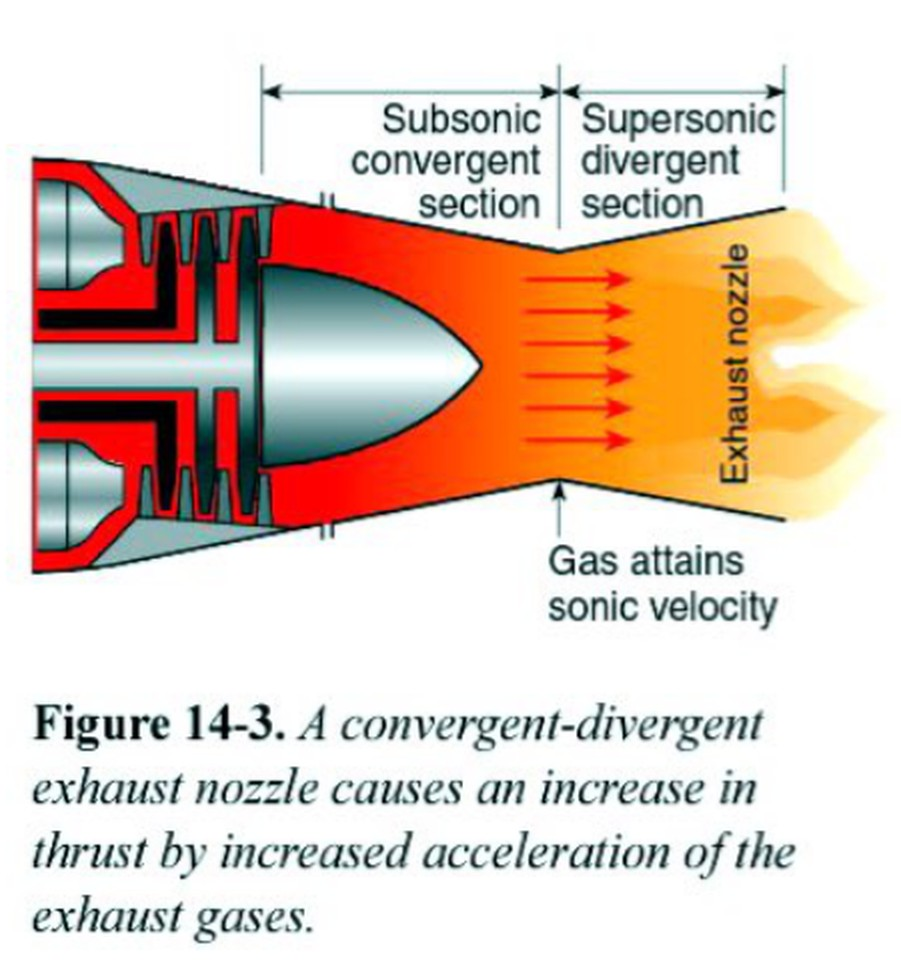
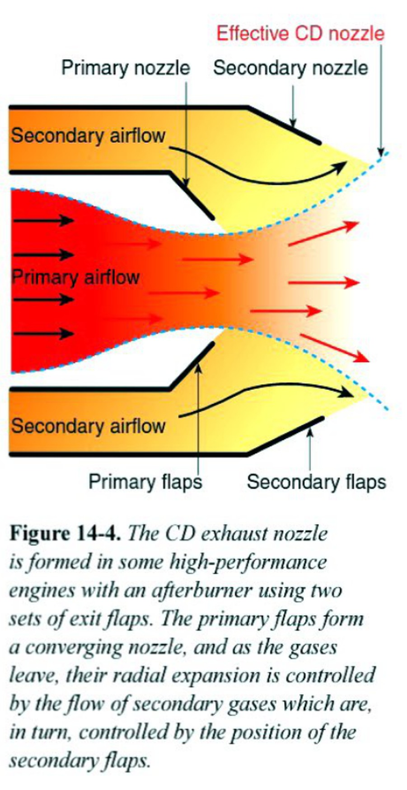
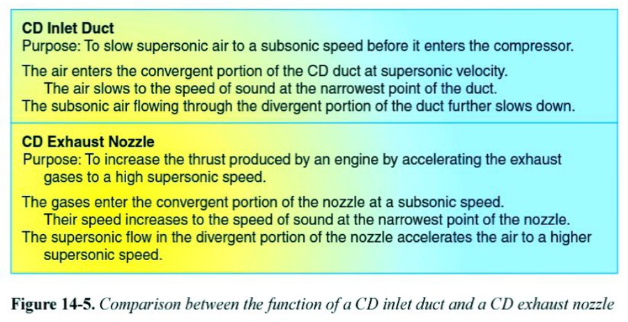

항공기 검사
Aircraft Inspection · 연차·100시간·프로그레시브 검사와 정압·트랜스폰더 점검
🎯 ACS AM.II.D · 기체 검사검사의 종류
Required Inspections📗 ASA AMT Vol.2검사(inspection)는 항공정비사의 가장 중요한 임무 중 하나입니다. 제조사는 서비스 매뉴얼에 상세 점검표를 제공하고, FAA는 14 CFR Part 43 Appendix D에 연차·100시간 검사 항목을, Appendix E에 고도계 계통, Appendix F에 트랜스폰더 시험 요건을 규정합니다.Inspection is one of the most important AMT functions. Manufacturers provide checklists; FAA lists annual/100-hour items in 14 CFR Part 43 Appendix D, altimeter tests in Appendix E, transponder tests in Appendix F.
검사는 복잡도 순으로 비행 전 점검(preflight) → 특별 검사(special) → 전기체 검사(major)로 구분됩니다.Inspections range from preflight to special to major (whole-aircraft) inspections.
📄 원문: ASA AMT Vol.2 Airframe Systems, p.923Source: ASA AMT Vol.2, p.923


- A. 유상 운송 또는 유상 비행교육에 사용되는 항공기An aircraft carrying persons for hire or used for flight instruction for hire
- B. 자가용으로만 운항하는 항공기An aircraft flown only for personal use
- C. 실험분류(Experimental) 항공기An aircraft in the experimental category
- D. 모든 항공기All aircraft
- A. 100비행시간100 flight hours
- B. 24개월24 calendar months
- C. 12개월(Calendar Month)12 calendar months
- D. 12개월 또는 100시간 중 먼저 도래하는 것12 months or 100 hours, whichever comes first
- A. 어떤 경우에도 초과 불가It may never be exceeded
- B. 정비를 받을 장소로 이동할 때 10시간까지Up to 10 hours while en route to a place where the inspection can be done
- C. 기장 재량으로 25시간까지Up to 25 hours at the pilot's discretion
- D. 운항규정에 정한 만큼Whatever the operations manual allows
- A. FAA에 서면 통보만Only written notice to the FAA
- B. 제작사 승인만Manufacturer approval alone
- C. IA의 구두 승인Verbal approval by an IA
- D. 소유자·운영자의 서면 요청과 절차서·일정·장비·자격 인력A written request by the owner/operator plus a procedures manual, schedule, facilities, and qualified personnel
비행 전 점검
Preflight Inspection📗 ASA AMT Vol.2비행 전 점검(preflight)은 정비 검사가 아니라 기장(PIC)이 수행하는 감항성 확인입니다. 조종실에서 시작해(점화·마스터 스위치, 연료량 확인, 서류 확인) 기체를 시계방향으로 돌며 점검합니다.The preflight is not a maintenance inspection—the pilot-in-command performs it. It starts in the cabin (switches, fuel quantity, paperwork) and proceeds around the aircraft.
연료 샘플 — 퀵드레인에서 연료를 배출해 물·이물질을 확인하고 등급 색상을 봅니다: 100 등급=녹색, 100LL=청색, 80 등급=적색. 착륙장치 — 타이어 공기압, 오레오 스트럿 피스톤 노출, 토션링크 마모, 브레이크 유압 누설을 확인합니다.Drain a fuel sample: grade 100 is green, 100LL blue, grade 80 red. Check gear: tire inflation, oleo piston extension, torsion-link wear, brake leaks.
서류 확인 — 현행 등록증(registration), 감항증명서(airworthiness certificate), 무선국 허가증. 비영리 운항은 12개월 내 연차검사, 유상 운항은 100시간 내 100시간 검사 필요.Documents: current registration, airworthiness certificate, radio-station license. Non-commercial needs an annual within 12 months; for-hire needs a 100-hour within 100 hours.
📄 원문: ASA AMT Vol.2 Airframe Systems, p.923–926Source: ASA AMT Vol.2, pp.923–926



- A. 정비사(A&P)The A&P mechanic
- B. 기장(PIC)The pilot in command
- C. 소유자The owner
- D. IA 보유자The mechanic with Inspection Authorization
- A. 물과 침전물 확인·제거To check for and remove water and sediment
- B. 연료량 확인To check fuel quantity
- C. 연료 온도 측정To measure fuel temperature
- D. 연료 압력 점검To check fuel pressure
정압계통·고도계 점검
Altimeter & Static System📗 ASA AMT Vol.214 CFR §91.411 — IFR로 관제공역 비행 시, 최근 24개월 이내에 정압계통·고도계·자동고도보고계통을 시험·검사해야 합니다. 정압계통 점검은 기체 등급(airframe rating) 정비사가 수행 가능(§91.411(b)(3)).§91.411: for IFR in controlled airspace, the static system, altimeter, and automatic altitude reporting must be tested within 24 months. An airframe-rated technician may do the static check.
비여압기 정압 점검 — 정압구를 밀봉하고, 대체정압원 밸브를 닫은 뒤, 고도계가 1,000ft 상승을 지시할 때까지 흡입(약 1 inHg). 1분간 유지 시 지시 변화가 100ft 이내여야 합니다.Unpressurized static check: seal the port, evacuate until the altimeter shows a 1,000-ft increase, hold 1 minute; change must be ≤100 ft.
여압기 — 최대 객실 차압 상당 고도까지 흡입, 1분 유지 시 변화가 해당 고도의 2% 또는 100ft 중 큰 값 이내. 고도계 자체 시험(척도오차·히스테리시스·마찰·케이스누설 등)은 제조사나 인증 수리소가 수행.Pressurized: evacuate to max cabin differential-pressure altitude; change ≤ 2% or 100 ft, whichever is greater. Altimeter tests (scale error, hysteresis, friction, case leak) require the manufacturer or a certified repair station.
트랜스폰더 — 24개월마다 Part 43 Appendix F에 따라 인증 수리소가 점검(응답주파수·감도·출력·Mode S 등).The ATC transponder is checked every 24 months per Appendix F by a certified repair station (reply frequency, sensitivity, output, Mode S).
📄 원문: ASA AMT Vol.2 Airframe Systems, p.927–929Source: ASA AMT Vol.2, pp.927–929

- A. 12개월Every 12 calendar months
- B. 100시간Every 100 hours
- C. 24개월Every 24 calendar months
- D. 36개월Every 36 calendar months
- A. 12개월, 91.40912 calendar months, 91.409
- B. 24개월, 91.41124 calendar months, 91.411
- C. 100시간, 43.15100 hours, 43.15
- D. 24개월, 91.41324 calendar months, 91.413
- A. 진공을 천천히 가한다Applying suction slowly
- B. 드레인을 먼저 닫는다Closing the drains first
- C. 계통에 양압을 가한다Applying positive pressure to the system
- D. 고도계를 보며 시험한다Watching the altimeter during the test
주요 검사 (연차·100시간·프로그레시브)
Major Inspections📗 ASA AMT Vol.2연차 검사(annual) — Part 91 운항 항공기(대형·터빈 다발기, 프로그레시브 제외)는 12개월마다 필수(§91.409). 검사 승인(IA, Inspection Authorization)을 보유한 정비사만 수행 가능.Annual: required every 12 months for Part 91 aircraft (§91.409); only a technician with Inspection Authorization (IA) may conduct it.
100시간 검사 — 유상 운송·유상 비행교육 항공기는 100시간마다 필수(§91.409(b)). 연차와 내용은 동일하나 A&P 자격만 있으면 되고 IA 불필요. 검사 장소로 이동 시 최대 10시간 초과 가능(단 다음 검사시간에서 차감).100-hour: required every 100 hours for for-hire and flight-instruction aircraft; same scope as annual but needs only an A&P (no IA). May exceed by up to 10 hours en route to the inspection site.
프로그레시브 검사(progressive) — 연차·100시간을 대체. 다운타임을 줄이기 위해 작은 단위로 나눠 12개월 내 전체를 완료. FSDO에 서면 신청 필요(IA 감독자, 절차 매뉴얼, 일정 포함).Progressive: replaces annual/100-hour, done in increments to minimize downtime, completing the equivalent of an annual within 12 months. Requires a written request to the FSDO.
대형기·터빈 다발기는 항공사 수준의 지속 감항 검사 프로그램(CAMP)으로 검사(§91.409(e)(f)). 이는 §43.15(d) 프로그레시브와 다릅니다.Large and turbine multi-engine aircraft use an air-carrier-style continuous airworthiness program (§91.409(e)(f)), which differs from the §43.15(d) progressive inspection.
📄 원문: ASA AMT Vol.2 Airframe Systems, p.929–933Source: ASA AMT Vol.2, pp.929–933

- A. A&P 정비사A certificated A&P mechanic
- B. IA를 보유한 A&P 정비사An A&P mechanic holding an Inspection Authorization
- C. 수리장 소속 누구나Anyone employed by a repair station
- D. 소유자The owner
- A. 정비사The mechanic
- B. FAA 검사관The FAA inspector
- C. 제작사The manufacturer
- D. 소유자 또는 운영자The owner or operator
Part 43 Appendix D 검사 항목
Appendix D Scope📗 ASA AMT Vol.214 CFR §43.15은 연차·100시간 검사를 점검표(checklist)에 따라 수행하도록 요구하며, 최소한 Part 43 Appendix D 항목을 모두 포함해야 합니다. 검사 전 필요한 점검판·도어·페어링·카울링을 열고 기체와 엔진을 청소합니다.§43.15 requires annual/100-hour inspections to follow a checklist including at least all Appendix D items. First open all necessary panels/cowls and clean the aircraft and engine.
동체·선체 그룹 — 외피·패브릭 열화·변형·부착 결함. 객실·조종실 — 좌석·안전벨트, 창·윈드실드, 계기, 조종장치, 배터리, 전 계통. 엔진·나셀 — 오일·연료·유압 누설, 스터드·너트 토크, 실린더 압축, 엔진마운트 균열, 배기관, 카울링.Fuselage/hull: skin/fabric deterioration, distortion, attachment. Cabin/cockpit: seats/belts, windows, instruments, controls, battery, all systems. Engine/nacelle: leaks, stud/nut torque, cylinder compression, mount cracks, exhaust, cowling.
착륙장치 그룹 — 상태·부착, 오레오 유량, 링크·트러스 마모, 접이·잠금 기구, 유압 누설, 전기계통, 휠 균열·베어링, 타이어 마모·컷, 브레이크 조정. 날개·중앙부·미익 — 상태·외피 열화·변형. 프로펠러 — 균열·닉·오일누설, 볼트 토크·안전결선, 방빙, 제어기구.Landing gear: condition/attachment, oleo fluid, linkage wear, retract/lock, hydraulic leaks, electrical, wheels/bearings, tire wear, brake adjustment. Wing/center/empennage: condition, skin. Propeller: cracks/nicks/leaks, bolt torque/safety, anti-ice, controls.
무선 그룹 — 장비 설치·장착, 배선·도관, 본딩·차폐, 안테나. 기타 항목 — 목록에 없는 설치품의 설치·작동 상태.Radio group: equipment mounting, wiring/conduits, bonding/shielding, antennas. Miscellaneous: any item not otherwise listed.
📄 원문: ASA AMT Vol.2 Airframe Systems, p.929–930 (Figure 14-3, Part 43 App.D)Source: ASA AMT Vol.2, pp.929–930



- A. 기체를 청소하고 점검창·카울링·페어링을 열거나 떼어낸다Clean the aircraft and open or remove all inspection plates, access doors, fairings, and cowling
- B. 엔진을 시운전한다Run up the engine
- C. 항공일지를 FAA에 제출한다Send the logbooks to the FAA
- D. 연료를 모두 배출한다Defuel the aircraft completely
- A. 출력 및 회전수Power output and RPM
- B. 마그네토 낙차Magneto drop
- C. 착륙장치 접개 시간Landing gear retraction time
- D. 기화기 히트 작동Carburetor heat operation
- A. 케이블 장력만 측정Measuring cable tension only
- B. 잘못된 장착·작동 불량·안전결선 불량 등 전반Improper installation, improper operation, and improper safetying in general
- C. 조종면 무게 측정Weighing the control surfaces
- D. 풀리 전량 교환Replacing all pulleys
연차·100시간 검사 수행
Conduct of Inspection📗 ASA AMT Vol.2검사는 ① 항공기 기록 검토 ② 정비 정보 조사 ③ 실제 기체 검사 ④ 기록 완료 순으로 진행합니다.An inspection proceeds: examine aircraft records, survey maintenance information, inspect the aircraft, complete records.
기록 검토 — 검사 종류·경과시간, 기체 총시간, 수명한정 부품 상태, 오버홀 경과시간, 주요 개조 목록, 적용 AD(감항성 개선지시) 준수 상태(날짜·방법, 반복 AD는 다음 기한).Records: inspection type/time, total airframe time, life-limited parts status, time since overhaul, major alterations, applicable AD compliance (date/method; next due for recurring ADs).
정비 정보 조사 — TCDS(형식증명자료), 모든 AD, Airworthiness Alert·서비스 불러틴, STC(보충형식증명) 설치 적합성 확인. 검사 시작 전 엔진 시운전으로 계통 작동·압축시험용 오일 예열.Info survey: TCDS, all ADs, Airworthiness Alerts/service bulletins, STC conformity. Before inspecting, run up the engine to check systems and warm oil for compression testing.
특별 검사 — 거친/과중 착륙, 심한 난기류 후 필수. 과중 착륙 시 착륙장치를 잭업하고 휠을 와전류검사(eddy current)(특히 비드시트부), 타이어 내부 코드 파손 확인. 프로펠러 충격·급정지 후엔 파워플랜트 매뉴얼에 따라 점검.Special inspections after a hard/overweight landing or severe turbulence: jack up gear, eddy-current the wheels (bead seat), check tire cords. After a prop strike, inspect per the powerplant manual.
📄 원문: ASA AMT Vol.2 Airframe Systems, p.933–938Source: ASA AMT Vol.2, pp.933–938


- A. 제작사 정비교범만The manufacturer's maintenance manual only
- B. FAA 발행 전용 서식A special FAA-issued form
- C. 아무것도 필요 없다Nothing is required
- D. 점검표 — 자작·제작사·기타 승인된 것A checklist — one's own, the manufacturer's, or another acceptable one
- A. 드라이브 샤프트·벨트, 클러치, 기어박스, 변속기, 로터Drive shafts or belts, clutches, gearboxes, transmissions, and rotors
- B. 여압 계통The pressurization system
- C. 제빙 부츠The deice boots
- D. 객실 산소 계통The cabin oxygen system
- A. 불가 — 모든 결함을 수정해야 한다No — every discrepancy must be corrected
- B. 가능 — 구두로 알리면 된다Yes — a verbal notice is enough
- C. 가능 — 불합격 처리하고 결함 목록을 서면으로 제공해야 한다Yes — but it must be disapproved and a written list of discrepancies given to the owner
- D. 불가 — FAA 승인이 필요하다No — FAA approval is required
검사 기록과 불합격 처리
Records & Failed Inspection📗 ASA AMT Vol.2검사 완료 후 §43.11에 따라 정비기록에 기재합니다. 합격 시: “이 항공기는 (검사종류) 검사를 받았으며 감항 상태로 판정됨”. 연차검사는 12개월 유효하며, 완료월 말일 자정에 만료(예: 6/4 완료 → 익년 6/30 자정 만료).Record per §43.11. If it passes: 'inspected in accordance with a(n) ___ inspection and determined to be in airworthy condition.' An annual is valid 12 calendar months, expiring midnight of the last day of that month.
불합격 시 — 감항성 미달 항목의 서명·날짜 목록을 소유자/임차인에게 제공(§43.11(b)). 결함은 검사자가 아니어도 적정 자격 정비사가 수정 가능. 주요 수리가 필요하면 FAA Form 337 작성, IA 보유자가 감항 승인·서명.If it fails: give the owner a signed, dated list of discrepancies (§43.11(b)). Any properly rated technician may correct them. Major repairs need FAA Form 337, signed by an IA holder.
연차 만료 시 이동 — 검사 장소까지 비행하려면 FAA의 특별비행허가(special flight permit)가 필요합니다.If the annual has expired, a special flight permit is needed to fly to the inspection site.
📄 원문: ASA AMT Vol.2 Airframe Systems, p.939–940Source: ASA AMT Vol.2, pp.939–940




- A. 항공기 총 사용시간Aircraft total time in service
- B. 사용한 공구 목록A list of the tools used
- C. 검사 종류와 완료 일자The type of inspection and date of completion
- D. 서명·자격증 번호·종류Signature, certificate number, and kind of certificate
- A. 매 연차검사 때At every annual inspection
- B. 24개월마다 무조건Unconditionally every 24 calendar months
- C. 제작사가 정한 때만Only when the manufacturer specifies
- D. 누적 1시간 사용 또는 유효 수명 50% 경과 시After one hour of cumulative use or when 50 percent of its useful life has expired
- A. 작업 시간과 비용The labor hours and cost
- B. 부품 구매처Where the parts were purchased
- C. 작업 내용, 완료 일자, 서명·자격증 번호·종류A description of the work, date of completion, and signature, certificate number, and kind of certificate
- D. 소유자의 서명The owner's signature
정비기록의 요건과 내용 📙 Jeppesen 참고
Maintenance Record Requirements정비기록은 항공기가 감항기준에 부합함을 증명하는 자료라, 기록이 없거나 불완전하면 항공기가 불감항이 될 수 있습니다. 정비사는 기입 의무가, 소유자는 보관 의무가 있습니다. 정비와 검사는 서로 다른 사건이라 기록도 분리합니다 — FAR 43.9가 정비 기입 요건을, 43.11이 검사 기입 내용을 정합니다(43.9는 검사를 명시적으로 제외).Maintenance records prove the aircraft conforms to airworthiness standards, so missing or incomplete records can render it unairworthy. Technicians must make entries; owners must keep them. Maintenance and inspection are different events, so records are kept separate — FAR 43.9 sets maintenance-entry requirements and 43.11 sets inspection-entry content (43.9 specifically excludes inspections).
정비 기입에는 네 가지가 들어갑니다 — ① 수행 작업의 설명(또는 FAA 수용자료 참조: 매뉴얼·SB·AD 등으로 대체 가능), ② 작업 완료일, ③ 복귀승인자와 다를 경우 작업 수행자 이름, ④ 복귀승인자의 서명·자격증번호·자격 종류. 한 사람이 작업하고 다른 사람이 복귀승인하면 서명이 둘일 수 있으나 단일 기입도 허용됩니다.A maintenance entry has four items — (1) a description of the work performed (or reference to FAA acceptable data: manuals, SBs, ADs, etc.), (2) the completion date, (3) the name of the person doing the work if different from the one approving return to service, and (4) the signature, certificate number, and certificate type of the person approving return to service. Two signatures may appear if one does the work and another returns it to service, but a single entry is acceptable.


소유자 보관 의무(91.417) 📙 Jeppesen 참고
Owner Recordkeeping (91.417)소유자는 정비사 기입보다 더 많은 정보를 보관해야 합니다(FAR 91.417): ① 기체·엔진·프로펠러·각 로터의 총 사용시간(TIS — 이륙 순간부터 다음 착지까지), ② 수명한계품(life-limited)의 상태, ③ 시간 기준으로 오버홀해야 하는 품목의 최근 오버홀 후 시간, ④ 현재 검사상태(마지막 검사 후 시간), ⑤ 적용 AD 상태(이행방법·AD번호·개정일·반복 여부·다음 기한), ⑥ 각 주요 개조에 대한 FAA Form 337 사본.Owners must keep more than the technician records (FAR 91.417): (1) total time in service (TIS — from takeoff to the next landing) of airframe, engines, propellers, and each rotor; (2) status of life-limited parts; (3) time since last overhaul of items overhauled on a time basis; (4) current inspection status (time since last inspection); (5) status of applicable ADs (method of compliance, AD number, revision date, whether recurring, next due); and (6) FAA Form 337 copies for each major alteration.
소유자가 기체·엔진·프로펠러 로그를 따로 둘 의무는 없지만 대부분 그렇게 하며, 이력·수명품·검사·AD 추적이 쉬워집니다. 정비사는 무엇을 어디에 적을지 알아야 합니다 — 엔진 오일·필터 교환은 엔진로그의 정비기입, 배기계통 수리는 기체로그의 정비기입입니다.Owners aren't required to keep separate airframe, engine, and propeller logs, but most do, easing tracking of history, life-limited items, inspections, and ADs. The technician must know what goes where — an engine oil/filter change is a maintenance entry in the engine log, while an exhaust-system repair is a maintenance entry in the airframe log.


- A. 총 사용시간, 수명 제한 부품 상태, 오버홀 이후 시간, AD 이행 상태Total time in service, status of life-limited parts, time since overhaul, and AD compliance status
- B. 최근 100시간 검사 기록The most recent 100-hour inspection record
- C. 정비 청구서Maintenance invoices
- D. 연료 급유 기록Fuel servicing records
- A. 소유자가 계속 보관한다The seller keeps them
- B. 구매자에게 인계하며 영구 보관 기록을 포함한다They are transferred to the purchaser, including the permanent records
- C. FAA에 제출한다They are sent to the FAA
- D. 폐기해도 된다They may be discarded
검사기록과 AD 이행 📙 Jeppesen 참고
Inspection Records & AD Compliance검사는 기록 기입 전에는 완료로 보지 않습니다. FAR 43.11에 따라 복귀 승인·불승인자는 ① 검사 종류·범위 설명, ② 완료일, ③ 항공기 총 TIS, ④ 인증문(certification statement), ⑤ 서명·자격번호·자격종류를 적습니다. 검사 결과 불감항이면 서명·날짜가 있는 불일치(discrepancy) 목록을 소유자에게 주고, 검사기입에서 이를 참조합니다. 검사를 중단하면 중단 사실을 기록에 명확히 남깁니다.An inspection isn't complete until the record entry is made. Per FAR 43.11, the person approving/disapproving return to service records (1) the type and extent of inspection, (2) the completion date, (3) aircraft total TIS, (4) a certification statement, and (5) signature, certificate number, and certificate type. If found unairworthy, a signed, dated discrepancy list goes to the owner and is referenced in the entry. If an inspection is discontinued, the record must clearly say so.
연차검사(annual)는 기체로그에만 기입하면 되지만, 100시간검사는 소유자가 로그를 분리했다면 해당 각 로그에 기입합니다. 프로그레시브·AAIP 검사 기입은 사용한 프로그램·수행한 부분·해당 절차에 따라 수행했다는 문구를 포함해야 합니다. AD 이행 시엔 완료일·이행자 이름·서명·자격번호·자격종류·현재 AD 상태를 적으며, 별도의 'AD 이행 대장(running AD log)'으로 관리해도 됩니다.The annual need only be entered in the airframe log, but the 100-hour goes in each applicable log if the owner keeps them separate. Progressive/AAIP entries must name the program, the segment accomplished, and state it was done per that program's procedures. For AD compliance, record the completion date, the complier's name, signature, certificate number and type, and current AD status; it may also be kept as a separate running AD log.


FAA 핸드북 전체 도면
FAA Handbook FiguresNo FAA Handbook figures for this chapter, or not yet uploaded.